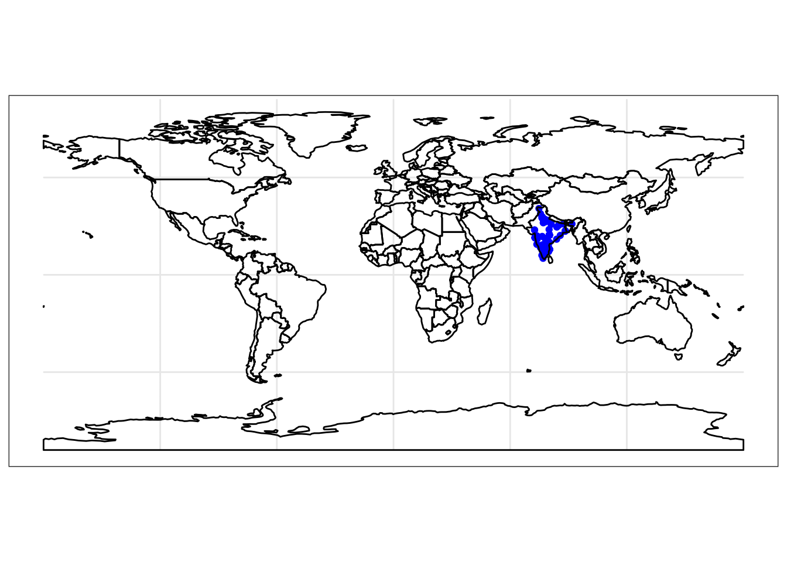

Presenting at R Sheffield
Last week I had the pleasure to present at the Sheffield R User Group alongside former PhD colleague (and roommate) Joanna Hill who is currently based in Uganda, working remotely at Rutgers University. It was a great event, set in a meeting room upstairs in The Red Deer pub, which gave it a nice informal feel. The attendees were all welcoming, knowedgeable, and very engaged and engaging, so it was a great experience and I recommend to anyone in the area. The one negative was that trains weren’t running due to floods so I had to drive and therefore not fully immerse the presenting-in-a-pub-with-a-pint aesthetic. Oh well, there is always next time, and at least we got to see some nice peak district views.
Peak views (photo by Jo Hill)
!!!DISCLAIMER!!!
I am no expert on scaping data from the web. In that I really only engage with this problem when I find an interesting source of data, then scarpe this, and then abandon it forever. So DISCLAIMER: there are probably much better, more effective/efficient ways of doing this.
In fact someone in the meetup mentioned rvest. I haven’t looked into it yet but an initial look is already super exciting, and I urge anyone interested in webscrping to check that out, as it’s probably loads more useful than my hack-together approach.
That said, I do use my hacky approach to get myself exciting data sets sometimes, such as data from FixMyStreet, and people have asked me before about how I do this, so I thought this could be a good chance to share that. So what follows is a cliffnote of the talk:
Finding some data about experiences of sexual harassment
Sexual harassment is a widespread global issue. 75% of all women worldwide (~ 2 billion) have experienced sexual harassment. 35% of all women worldwise (~ 930 million) have experienced some form of sexual/physical violence (source: World Health Organisation, 2017).
One approach to tackle sexual harassment is to use a Crime Science framework. Crime science
- applies scientific method
- to the study of crime and security problems
- with the aim of reducing harm
(source: Cockbain, E., & Laycock, G. (2017). Crime Science. Oxford Research Encyclopedia of Criminology)
However one issue with sexual harassment is that sexual harassment and violence are massively underreported:
- in England and Wales, 1 in 6 people who had experienced rape or assault by penetration (17%) had told the police
- (source: Office of National Statistics)
- in India, fewer than 1.5% of victims of sexual violence report their assaults to police
This means that we struggle to gain information about the situational features associated with sexual harassment and violence.
One solution can be to make use of crowdsourced data, as I have done in previous projects looking at fix my street reports and spatial behaviour of those who report. In particular, there is an online platform called Safecity.
home screen of safecity.in
Safecity is a platform that crowdsources personal stories of sexual harassment and abuse in public spaces. This data which maybe anonymous, gets aggregated as hot spots on a map indicating trends at a local level. The idea is to make this data useful for individuals, local communities and local administration to identify factors that causes behavior that leads to violence and work on strategies for solutions (source: Safecity).
To submit a report, you click on a map and find the location where the incident took place. Then you fill out a short form that asks for a title, a description, the time of the incident.
form for submitting report
These reports are then displayed on the website.
a screenshot of one report
These reports are viewable one by one, but also, lucky for the potential data-hungry researcher, their URLs are sequential. What I mean is that, if one report is safectiy.in/.../report/12345 then the next ones are safectiy.in/.../report/12346 and safectiy.in/.../report/12347 etc. So, if we can write a script to open each page, and take the data we need, and then move on to the next one, we can iterate through each report, from first to last, to build a dataframe of these reports.
Extracting the data we need
So how to extract the data we need? Well as a first step we need to think about the variables of interest. One good starting point is the form that someone reporting an incident would have to fill out. We can see it has for example a ‘title’. Great so let’s get the title for each report. To do this, we will need to see what html ‘tags’ this title is demarcated by. So fir this, first view the page source by right clicking somewhere on the page, and selecting “View Page Source”. So here I have the source for the report http://maps.safecity.in/reports/view/11679
view page source screenshot
My approach here is to start searching for the tag in this source. For exaple, I can see that the tag here is "report-title".
screenshot of report-title in source
So I make a note of this, and any other tags that I will need to locate the variables that I want to scrape into my datasets.
My approach to selecting the variables required is to start by downloading the entire page. I do this with readLines(), which grabs all the lines into a list object. Here I use the url() function to get all the lines directly from the web page for which I have the url address. In this case that address is http://maps.safecity.in/reports/view/11679. Let’s grab all the lines for this into an object I will call all_lines.
all_lines <- readLines(url("http://maps.safecity.in/reports/view/11679"))This all_lines object now contains all the lines of html that we could see earlier when we used the “View Source” option in our web browser. If interested we can print this to the console just to see…
Anyway, usually we are not interested, instead we want to select the lines of interest. So for example, we want to select the line which has the title of the report that is displayed on this page. But how to find this line?
One approach is to use grepl(). This function uses pattern matching to return TRUE where a pattern is found in a string. For example, grepl("a", "abc") returns TRUE, while grepl("z", "abc") returns FALSE. So, using the tag we identified earlier, “report-title”, we can use grepl to find the line where it is present.
We can then use subsetting (here I’m using square brackets) and the which() function, which returns the TRUE indices of a logical object, allowing for array indices. For example, which(grepl("a", c("abc", "xyz"))) will return 1, and which(grepl("z", c("abc", "xyz"))) will return 2.
Going back to the case of extracting the title of the report from our webpage, we can create an object called title, and use subsetting and grepl() and which() to assign to it the line which has the “report-title” tag.
title <- all_lines[which(grepl("report-title", all_lines))]This is nice, but you can see it returns the entire line, html tags and all:
title## [1] "\t\t<h1 class=\"report-title\">Stalking</h1>"To clean out the HTML tags I make use of a function (obviously lifted from Stackoverflow):
cleanFun <- function(htmlString) {
return(gsub("<.*?>", "", htmlString))
}Unfortunately for me, this has not removed the tabs:
cleanFun(title) ## [1] "\t\tStalking"Now again, there are probably better ways to do this but I am too lazy to look this up so I use more pattern matching with the gsub() function to get rid of those:
gsub("\\t", "", cleanFun(title))## [1] "Stalking"Using the above to build a dataframe
Okay so that should give you an idea of how to extract a variable of interest from one page. We did this for title but you could do it again easily for other features of interest, such as the description, or the longitude/latitude for mapping. And more importantly, you want to do this for multiple reports, to append them all together into a dataframe.
I mentioned before that the URLs for these reports are sequential, in that report 1234 is followed by report 1235, 1236, 1237, and so on. You may guess where I’m going with this: it is possible to write a loop that will repeat this extraction action for all the urls in a list. Again, I know for loops are evil in R, but this is where I’m at.
So first things first, I create an empty list to save all my dataframes into. I’ll call ic (creatively) datalist. I also need to create a counter j here. (Note: I only create it here because I don’t start my loop from 1. Mostly because this is a toy example. If I were getting all the reports (in fact when I got all the reports) I would build my loop with 1:number of reports, so I could simply use i to index my list of dataframes. )
datalist <- list()
j <- 1Now that I have these essential items, I write a loop, which will count from 11676 to 11679 to iterate through 4 reports (http://maps.safecity.in/reports/view/11676, http://maps.safecity.in/reports/view/11677, http://maps.safecity.in/reports/view/11678, http://maps.safecity.in/reports/view/11679) and for each one, repeat the steps discussed above to extract a title (and also duplicate for description), and save into my list object called datalist.
for (i in 11676:11679) {
all_lines <- readLines(url(paste0('http://maps.safecity.in/reports/view/', i)))
datalist[[j]] <- data.frame(
title = gsub("\\t","",cleanFun(all_lines[which(grepl("report-title", all_lines))])),
description = gsub("\\t","",cleanFun(all_lines[which(grepl("Description", all_lines)) + 1]))
)
j <- j+1
}(Note: I also increase my index j there, again if you start from report 1, this is not necessary).
When this is all finished, I am left with a list of dataframes, so my remaining task is to bind the list of data frames. Because I’ve been so hacky with everything I want to make up for it and inject some tidyverse into the mix, so let’s use the bind_rows() function from dplyr to do this.
library(dplyr)
safecity_data <- bind_rows(datalist)Now we have a dataframe called safecity_data which we can have a look at here:
| title | description |
|---|---|
| TOUCHINGS | The girl was being touched by her classmates who are boys on her buttocks. |
| TOUCHINGS | A teacher is touching girls on their buttocks and canning their buttocks too. |
| Stalking | A man kept following me.. It was scary.. He kept saying something |
| Stalking | A man kept following me.. It was scary.. He kept saying something |
As I mentioned, this is a toy example, but it should provide you with a good idea about how you can go about replicating this for more variables, and across more URLs. One thing I did not mention is error handling. It is likely that not all URLs will lead to a valid page, for example reports may get removed, or for other reasons. For such cases it is important that the code you run has a way to handle such errors. In my work I used tryCatch(), which worked excellently.
Map and sample the reports
Once you had all your variables (including spatial data such as Longitude and Latitude) and a sizeable data set, it is possible to put these reports on a map, and use spatial information to sample from these reports.
The first step to take for this is to make the data spatial. Currently, while the data may have a Longitude and Latitude column, these are not recognised as a geometry. To achieve this, you can use the sf package. Sf stands for simple features. Simple features or simple feature access refers to a formal standard (ISO 19125-1:2004) that describes how objects in the real world can be represented in computers, with emphasis on the spatial geometry of these objects. It also describes how such objects can be stored in and retrieved from databases, and which geometrical operations should be defined for them ( source: R Spatial). Check out Lovelace, R., Nowosad, J., & Muenchow, J. (2019). Geocomputation with R. CRC Press. for a great resource on all things spatial in R with sf.
For this example here, I’ve got a larger data set from my earlier webscraping work so let’s use the function st_as_sf() from the sf library to turn the long and lat columns into geometries:
library(sf)
safecity_sf <- st_as_sf(safecity, coords = c("longitude", "latitude"), crs = 4326)Having done this, we turn the flat dataframe into an sf object, and it becomes incredibly smooth to map the data, using our trusty old ggplot:
library(ggplot2)
ggplot() +
geom_sf(data = safecity_sf, colour = 'blue') +
theme_bw()By turning our data into an sf spatial object, and using geom_sf() it becomes possible to plot our data as a ggplot. But the above isn’t giving us loads of context really. We can possibly guess that the blob of points is India, but unless we’re great geograpgers we may encounter trouble trying to guess where our out-of-India points are…
One way to quickly give some context and explore the background is to make use of the shapefiles in the rnaturalearth package, an R package to hold and facilitate interaction with Natural Earth map data. Read more about its usage here.
Then, we can use the function ne_countries() to request a vector shapefile of all the country outlines across the world. In the parameters we specity that we want the resulting object to be of class sf, as well as set out the fill and outline colours.
library(rnaturalearth)
ggplot() +
geom_sf(data = safecity_sf, colour = 'blue') +
geom_sf(data = ne_countries(returnclass = 'sf'), fill = 'transparent', colour = 'black') +
theme_bw()This time we can see better that yes all our points are in India, but we seem to have some reports from the USA and the UK as well.
Which brings us to the sampling option. What if I wanted only those reports that were made in India, and to exclude the other ones? Well we can make use of the specific shapefile from the rnaturalearth package to subset our point list to only those which intersect with the India polygon. So let’s create a sf object for India:
india <- ne_states(country = 'india', returnclass = 'sf')To then select only reports made in India, we can use the st_intersects() function from the sf package, which will return TRUE for all points which intersect our polygon of interest. Then we can use that set of points labelled with TRUE to subset our original dataframe. Like so:
india_safecity_int <- st_intersects(india, safecity_sf)
india_safecity_sf <- safecity_sf[unlist(india_safecity_int),]Now we can make sure we did everything right, and map our India only reports
ggplot() +
geom_sf(data = india_safecity_sf, colour = 'blue') +
geom_sf(data = ne_countries(returnclass = 'sf'), fill = 'transparent', colour = 'black') +
theme_bw()
We now have a fantastic, spatially explicit data set of people’s experiences with victimisation from sexual harassment across India. It can be now used to perform other mapping exercises, and in my presentation I mentioned tmap for creating thematic maps smoothly, and sppt for running various spatial point pattern tests to compare different point sets.
Wrapping up
Overall I hope the above is useful as a bit of a guide into thinking about scraping some data from the web that may fill a gap in knowledge or understanding around a specific problem, which may help gain further insight and achieve good outcomes (possibly reduced prevalence of sexual harassment, or other societal ills). As I mentioned, there are probably other better/more efficient ways of doing this, but I thought I would share what I have been doing here.
I am actually writing up a paper from the data, so I will share this later on here as well, for anyone interested. I will be presenting a version of this paper at the ASC so if anyone will be there then come see what we got up to with all these data!
On a final note, thank you to Anna Krystalli for inviting me to speak at R Sheffield, I really do recommend anyone in the area to attend this meetup, and if you have something to share to get in touch with Anna. I hope that I can attend another meetup soon, hopefully when the trains are back up and running so I can make up on that lost pint…!